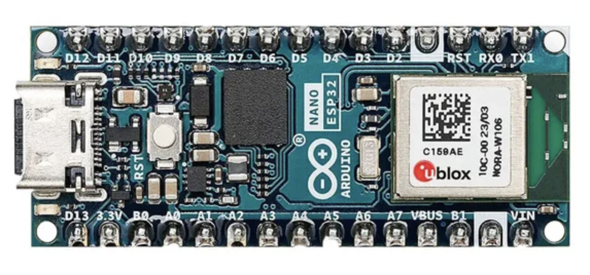

Arduino Nano ESP32
The Nano ESP32 puts an Espressif ESP32-S3 (in a u-blox NORA-W106 module) on the Nano form factor. Unlike the UNO boards, its CPU is an Xtensa LX7, so Juno generates Xtensa assembly for it with its own backend instead of the Thumb-2 or AVR one.

Core specification
| Characteristic | Nano ESP32 |
|---|---|
| Product SKU | ABX00083 |
| Module | u-blox NORA-W106-10B (ESP32-S3) |
| CPU architecture | Dual-core 32-bit Xtensa LX7 |
| CPU clock | 240 MHz |
| Program flash | 16 MB (external) |
| SRAM | 512 kB, plus 8 MB PSRAM |
| Logic and operating voltage | 3.3 V |
| USB connector | USB-C (native USB) |
| Built-in LED | D13 (ESP32-S3 GPIO48) |
| Arduino CLI FQBN | arduino:esp32:nano_nora |
| Juno board id | arduino-nano-esp32 |
What Juno supports
| Feature | Status | Notes | Example |
|---|---|---|---|
Gpio, DigitalOutput |
✓ | Pins keep the numbers printed on the board: getBuiltinLed() is 13 (GPIO48), and getA0()–getA5() are 14–19, so Grove drivers and pin maps work unchanged. Never pass raw ESP32 GPIO numbers; the onboard RGB LED is not reachable. |
|
Delay, Serial |
✓ | Serial over the native USB port. |
|
int, long, float, double |
✓ | Java semantics kept (a long division by zero stops the program, float-to-int casts saturate). float uses the S3's FPU; double is soft-float. |
SerialWideMath, SerialDoubleMath |
Double-precision java.lang.Math |
✓ | Uses the toolchain's libm. | SerialDoubleMath |
| Objects, arrays, static and interface calls | ✓ | ||
| Lambdas and method references | ✓ | Every shape. | SerialLambdas |
BigInteger, BigDecimal, MathContext |
✓ | Runs in the arena with the JDK's rounding and text rules. | SerialBigNumbers |
Threads, synchronized, ReentrantLock, StructuredTaskScope, ScopedValue |
✓ | Each thread is a FreeRTOS task with an 8 KiB stack (-Djuno.Xss); one runs Java at a time, handing over after a 1 ms slice. At most four threads including main (-Djuno.maxThreads). |
SerialThreads |
@Watchdog |
✓ | ESP32-S3 task watchdog; the timeout is rounded up to whole seconds. | |
UUID.randomUUID() |
✓ | Hardware RNG through esp_fill_random; may be weaker before Wi-Fi or Bluetooth start. |
SerialUuids |
| Wi-Fi station | ✓ | begin, status, localIP, gatewayIP, macAddress; credentials from the microSD card (see SD Card). |
NanoWifiStatusSD |
| Wi-Fi access point | ✓ | beginAP(ssid, password). |
NanoAccessPointSD |
Udp, SNTP (LocalDateTime.now()) |
✓ | Through the core's WiFiUDP; optional sntp.host/sntp.port from the card. |
NanoSntpTimeSD |
HttpClient (HTTP) |
✓ | Host is a literal in the program; the path can come from the card. | NanoHttpGetSD |
HttpClient.requestHttps |
✓ | Checks the chain against Mozilla's root certificates, bundled into the program (about 55 KB of flash); validity dates are not checked. | |
HttpServer |
✓ | Runs on the station address. | NanoHttpServerSD |
Smtp.sendTls, Pop3Client |
✓ | Implicit TLS on ports 465 and 995, checked against the bundled roots. Password, subject and body must fit in 31 bytes each. | NanoSmtpSendSD, NanoPop3InboxSD |
Smtp.send (STARTTLS) |
✓ | Needs arduino-cli lib install ESP_SSLClient. After the upgrade the server's chain, and its dates, are checked against the bundled Mozilla roots; the first send sets the board's clock over SNTP (pool.ntp.org). |
NanoSmtpStarttlsCredentialsSD |
| USB HID mouse | ✓ | ArduinoNano.getMouse() through TinyUSB; shares the USB port with Serial. |
NanoRatonLoco |
Features
These need only the Nano ESP32 and its USB cable.
Blink the built-in LED
getBuiltinLed() is D13, the pin printed on the board (GPIO48 on the chip).
Serial.begin(BaudRate.BAUD_115200);
DigitalOutput led = DigitalOutput.of(ArduinoNano.getGpio().getBuiltinLed());
while (true) {
led.high();
Serial.println("on");
Delay.millis(500);
led.low();
Serial.println("off");
Delay.millis(500);
}
SerialBlink also prints a cycle counter with each change.
USB HID mouse
ArduinoNano.getMouse() makes the board a USB mouse for the computer it is plugged into; Serial keeps working on the
same USB port. Call begin() once, then move(x, y) moves the pointer by that many pixels:
Mouse mouse = ArduinoNano.getMouse();
mouse.begin();
while (true) {
mouse.move(50, 0); // right
Delay.millis(1000);
mouse.move(0, 50); // down
Delay.millis(1000);
mouse.move(-50, 0); // left
Delay.millis(1000);
mouse.move(0, -50); // up
Delay.millis(1000);
}
Once uploaded, the program keeps moving the pointer; disconnect the board or upload another program to stop it.
NanoRatonLoco also prints each side over Serial.
Shields
Nano Connector Carrier

The Arduino Nano Connector Carrier (ASX00061) is passive: every connector is a Nano header pin, and
NanoConnectorCarrier names them so programs don't hard-code numbers:
| Connector | Nano pins | NanoConnectorCarrier |
|---|---|---|
| microSD slot (SPI) | CS D4 (D2/D3 by solder jumper), MOSI D11, MISO D12, SCK D13 | getSdCard(), getSdChipSelect(), getSdChipSelectJumperD2()/D3(), getSpiMosi()/Miso()/Sck() |
| Grove A0/A1 (analog) | A0 signal, A1 | getGroveA0(); wires getA0(), getA1() |
| Grove A2/A3 (analog) | A2 signal, A3 | getGroveA2(); wires getA2(), getA3() |
| Grove UART | RX D0 (signal), TX D1 | getGroveUart(); wires getUartRx(), getUartTx() |
| Grove I2C and Qwiic | SDA A4, SCL A5 | getI2cSda(), getI2cScl() (one bus, ArduinoNano.getI2c()) |
As with GroveBaseShield, plug a single-signal Grove module in and pass the socket's getter to its
driver: pir.begin(carrier.getGroveA2()). The analog sockets work for digital modules too. Keep
digital modules out of the I2C socket: its bus pull-ups held a Grove PIR's output at about 1.4 V at
rest, neither low nor high. The class Javadoc has a diagram of the connectors, and pin details are in
the ASX00061 datasheet.
The input selector switch sets the Grove connectors' VCC to 3.3 V or 5 V; use 3.3 V with the Nano ESP32. The Qwiic connector is always 3.3 V.
The carrier seen from its connector side, USB cable at the bottom; * marks each Grove socket's yellow
signal wire (Grove pin 1):
+---------------------------------------------+
| Grove I2C Grove UART |
| [ GND ] [ RX * ] |
| [ VCC ] [ TX ] |
| [ SDA ] A4 [ VCC ] |
| [ SCL *] A5 [ GND ] |
| +-------------+ |
| Qwiic | microSD | |
| [ I2C ] | slot | |
| A4/A5, 3.3 V | CS D4 | |
| +-------------+ |
| Grove A0/A1 Grove A2/A3 |
| [ GND ] [ A2 * ] |
| [ VCC ] [ A3 ] |
| [ A1 ] [ VCC ] |
| [ A0 * ] [ GND ] |
+-------------------[ USB ]-------------------+
Features
Read the SD card
The Nano has no SD slot of its own, so SdCard needs the carrier: getSdCard() reaches its microSD
slot (chip select D4, SPI D11–D13) through the same SdFat runtime as the UNO boards. The examples
that read settings from the card (the …SD programs above) therefore need the carrier too.
NanoConnectorCarrier carrier = new NanoConnectorCarrier();
SdCard sd = carrier.getSdCard();
if (sd.begin() && sd.exists("application.properties")) {
InputStream in = sd.open("application.properties");
// read the file
}
SdFileOperations exercises every SdCard file
operation end to end and reports each step over serial.
Connect to Wi-Fi with credentials from the SD card
Keep the network's credentials on the card rather than in the source: put them in application.properties at the
card's root,
wifi.ssid=your-network
wifi.password=your-password
then read the file with java.util.Properties and join the network:
SdCard sd = new NanoConnectorCarrier().getSdCard();
Wifi wifi = ArduinoNano.getWifi();
if (sd.begin()) {
try (InputStream file = sd.open("application.properties")) {
if (file != null) {
Properties properties = new Properties();
properties.load(file);
wifi.begin(properties.getProperty("wifi.ssid"), properties.getProperty("wifi.password"));
}
}
}
while (wifi.status() != Wifi.STATUS_CONNECTED) {
Delay.millis(1000);
}
NanoWifiStatusSD is the complete program: it joins the network and
prints its status once a second.
Read a Grove sensor
Plug a single-signal Grove module into an analog socket and pass the socket's getter to its driver.
NanoConnectorCarrier carrier = new NanoConnectorCarrier();
GrovePirMotion pir = new GrovePirMotion();
GroveLightSensorV12 light = new GroveLightSensorV12();
pir.begin(carrier.getGroveA2());
boolean motion = pir.motionDetected(carrier.getGroveA2());
int level = light.rawValue(carrier.getGroveA0());
NanoCarrierGroveSensors prints a
Grove PIR in the A2/A3 socket and a light sensor in the A0/A1 socket once a second.
Remote-control a LEGO RCX
With a Grove infrared emitter in the A0/A1 socket and a Grove infrared receiver on the I2C socket's
SCL line, the Nano talks to a LEGO Mindstorms RCX brick through RemoteRcx (see
LEGO). Download Juno's RCX firmware to the brick once with
NanoCarrierRcxFirmwareDownload: keep the brick 10 to 50 cm away and still for about ten
minutes. The brick then answers on channel 1:
NanoConnectorCarrier carrier = new NanoConnectorCarrier();
GroveInfraredEmitter emitter = new GroveInfraredEmitter(carrier.getGroveA0());
GroveInfraredReceiver receiver = new GroveInfraredReceiver(carrier.getI2cScl());
RemoteRcx rcx = new RemoteRcx(new RcxLink(ArduinoNano.getClock()), 1, receiver, emitter,
ArduinoNano.getClock());
rcx.begin();
RcxMotor motor = rcx.getMotorA();
motor.setPower(4);
motor.forward();
One example per part of the brick: NanoCarrierRcxMotorA, NanoCarrierRcxButtons,
NanoCarrierRcxTouchSensors, NanoCarrierRcxLightSensor,
NanoCarrierRcxRotation, NanoCarrierRcxTemperature, NanoCarrierRcxLcd,
NanoCarrierRcxLamps, NanoCarrierRcxSound and NanoCarrierRcxBattery.
Build and run
Install the core once with arduino-cli core install arduino:esp32. Blink builds for any board,
and SerialBlink
targets the Nano ESP32 and reports every LED change at 115200 baud:
./mvnw -f juno-examples/pom.xml compile juno:verify \
-Djuno.main=io.github.jabrena.juno.api.hardware.gpio.Blink \
-Djuno.board=arduino-nano-esp32
The board can list two ports at once, its USB DFU port (for example 1-1) and its serial port, so
the plugin cannot pick one alone. Upload through the DFU port and monitor the serial one:
./mvnw -f juno-examples/pom.xml compile juno:upload \
-Djuno.main=io.github.jabrena.juno.api.hardware.serial.SerialBlink -Djuno.port=1-1
./mvnw -f juno-examples/pom.xml juno:monitor -Djuno.board=arduino-nano-esp32 \
-Djuno.port=/dev/cu.usbmodem<ID> -Djuno.baudRate=115200
The USB port re-enumerates when the program starts, so a program should wait a moment after
Serial.begin before its first line, as SerialBlink does.